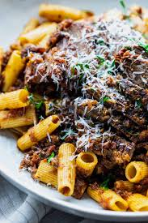

Rigatoni alla Genovese

Rigatoni alla Genovese is a rich and flavorful Italian pasta dish that originated in Naples, not Genoa, despite its name. It features a slowly cooked ragù (meat sauce) made primarily with onions and beef. Essentially, Rigatoni alla Genovese is a celebration of slow cooking and the transformative power of caramelized onions, resulting in a rich, comforting pasta dish that showcases the flavors of Southern Italy.
Ingredients
- 1 tablespoon olive oil
- 6 ounces pancetta or salt pork, diced
- 2 ½ pounds beef chuck
- 3 teaspoons kosher salt, divided
- ½ cup diced celery
- ½ cup diced carrots
- 1 teaspoon freshly ground black pepper
- ⅔ cup white wine
- 1 heaping tablespoon tomato paste
- 1 bay leaf
- 4 pounds yellow onions, sliced
- 2 pounds red onions, sliced
- 2 (16 ounce) boxes uncooked rigatoni
- 2 tablespoons freshly grated Parmigiano-Reggiano cheese
- 1 tablespoon chopped fresh marjoram leaves
- 1 pinch cayenne pepper
Steps
- Heat oil in a large pot over medium heat. Add pancetta and cook until most of the fat is rendered, about 6 minutes. Transfer to a plate with a slotted spoon.
- Add beef chuck and 2 teaspoons salt to the pot. Increase the heat to high; cook and stir until browned and any liquid released begins to evaporate, 10 to 15 minutes.
- Reduce the heat to medium-high. Add cooked pancetta, celery, carrots, remaining 1 teaspoon salt, and pepper; cook and stir for 5 minutes. Add white wine, tomato paste, and bay leaf; cook and stir for 2 to 3 minutes, scraping up the drippings from the bottom of the pan.
- Add yellow and red onions. Reduce the heat to medium, cover, and cook for 30 minutes without stirring. After 30 minutes, stir onions and meat until well mixed. Cover again and cook for 30 more minutes.
- Stir, then reduce the heat to low. Keep uncovered and cook, occasionally stirring and skimming off any fat, until beef and onions seem to melt into each other, 8 to 10 hours. If the sauce is reducing too much, add water or broth as needed to maintain a sauce-like consistency.
- When the sauce is almost finished, bring a large pot of lightly salted water to a boil. Cook rigatoni in the boiling water, stirring occasionally until just barely al dente, 10 to 12 minutes. Drain.
- Add rigatoni to the sauce and cook until heated through. Garnish with Parmigiano-Reggiano cheese, marjoram, and cayenne.
Home